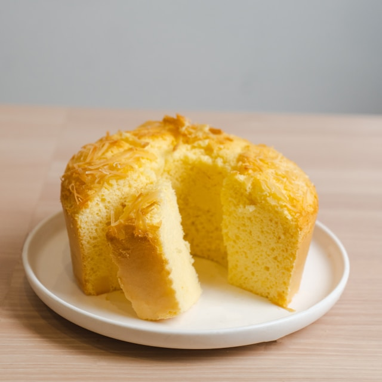

Bolo de Milho

O bolo de milho de lata no liquidificador é uma verdadeira homenagem aos sabores tradicionais da culinária brasileira.
Essa receita, além de deliciosa, é extremamente prática, sendo ideal para quem busca um doce caseiro sem abrir mão da facilidade no preparo
Ingredientes
- 1 lata de milho (sem o líquido)
- 1 lata de açúcar (medida da lata de milho)
- 1/2 lata de óleo de soja
- 1 colher (sopa) de fermento em pó
- farinha de trigo para untar
- 1 lata de leite (medida da lata de milho)
- 1 lata de flocão de milho
- 3 ovos inteiros
- margarina para untar
Modo de preparo
- Escorra o milho e use a própria lata para as medidas.
- Unte e enfarinhe uma forma de bolo com furo.
- Preaqueça o forno.
- Coloque no liquidificador o milho (já escorrido), o leite, açúcar, flocão de milho, óleo, ovos e bata bem até que o milho fique bem moído.
- Se quiser, pode acrescentar duas colheres de sopa de coco ralado.
- Acrescente o fermento em pó e pulse o liquidificador 3 vezes.
- Despeje essa massa na forma e leve ao forno médio.
- Deixe assar por, aproximadamente, 40 minutos.
- Faça o teste do palito e observe um tom dourado médio, para saber que o bolo está pronto.
- Espere esfriar totalmente para desenformar.